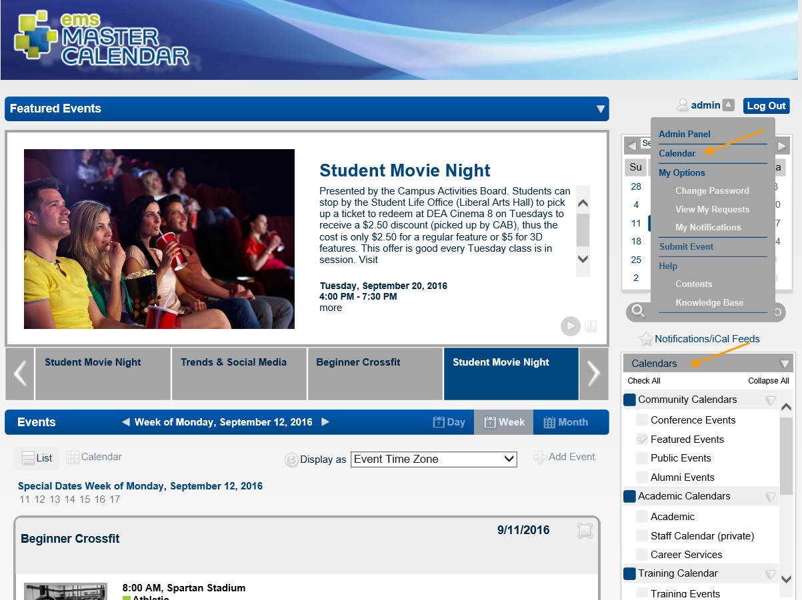
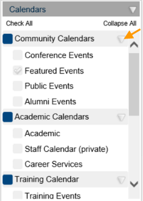
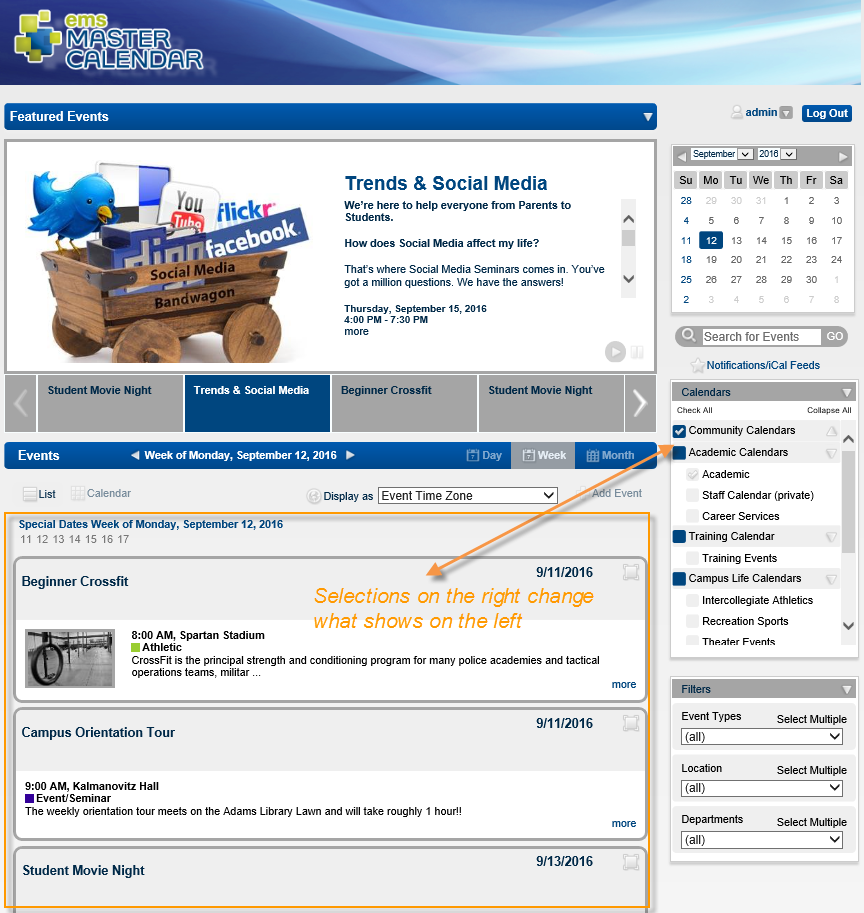
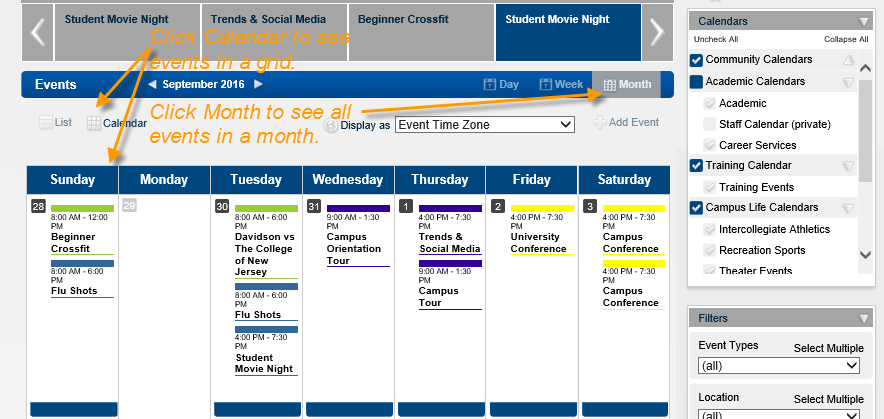
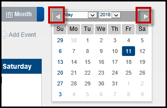

The Calendars section is available on the Default page and on the EMS Master Calendar Home page. You can also click Calendar on the EMS Master Calendar main menu.

The Calendar panel is condensed into groups, which you can expand or collapse. Next to each grouping and each category within each group, you can click to select specific items.
To expand a group, click the Expand button.

As you select and deselect checkboxes next to each item, the events shown in the left panel change.

Each calendar you select might have its own default timeframe (Day, Week, Month, or Year) and view (Calendar or List). For multiple calendars, a single combined calendar shows all the events. The default date for the calendar display is the current day’s date.

In the Calendar view or the List view, use the Next and Previous Buttons on the Calendar Tool to navigate through calendar dates month by month or year by year.

In the List view, if any events are present as you scroll through the dates, the list is updated with these events. If no events are scheduled within the selected time frame, then “No Events” is displayed; however, if events occur within the selected timeframe but they have a date prior to the current day’s date, then a Show Past Events option is displayed on the calendar. Select this option to update the list with these past events.
By default, the list is grouped by Event Date. You can select a different Group By option (Location or Calendar).